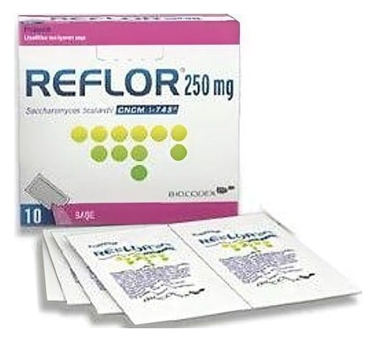

Reflor 250 mg Liyofilize Toz İçeren Sase, 10 Adet

Ne için kullanılır
KT · Bölüm 1REFLOR'un etkin maddesi olan Saccharomyces boulardii, biyolojik kaynaklı bir ishal kesicidir (antidiyareik). REFLOR kağıt/alüminyum'/polietilen ambalaj içinde, 10 ve 20 adet saşe içeren karton kutularda pazarlanmaktadır. REFLOR, mikrobik (enfeksiyöz) ve spesifik olmayan ishallerin ve antibiyotik tedavisine bağlı ishal gibi sindirim sistemi rahatsızlıklarının önlenmesi ve tedavisinde kullanılan
Vankomisin/metranidazole isimli ilaçlara ek olarak Clostridium difficile isimli bir bakterinin neden olduğu hastalığın tekrarının önlenmesinde. Seyahata bağlı turist ishalinin önlenmesi ve tedavisinde kullanılır.